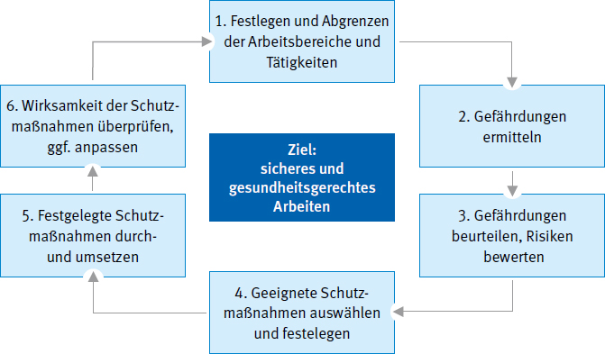

3 Maßnahmen zur Verhütung von Gefahren für Leben und Gesundheit durch die Arbeitsschutzorganisation
3.1 Maßnahmen und Einrichtungen zur Verwendung von Arbeitsplattformnetzen
3.1.1
Die Unternehmerin bzw. der Unternehmer haben in Abhängigkeit von den ausgewählten Arbeitsverfahren die von der Bauherrschaft planerisch und organisatorisch vorgesehenen Vorgaben und Maßnahmen zu berücksichtigen.
Vorgesehene Maßnahmen und Vorgaben ergeben sich z. B. durch
- die Vorgaben aus dem Sicherheits- und Gesundheitsschutzplan (SiGePlan) des Sicherheits- und Gesundheitsschutzkoordinators (SiGeKo),
- vorhandene Sicherheitseinrichtungen wie z. B. Anschlageinrichtungen,
- Gefahrstoffe aus dem Objekt / Bauvorhaben,
- nicht belastbare Decken, Böden oder Dachflächen,
- nicht außer Betrieb zu nehmenden Anlagen,
- Auflagen auf Grund des Nachbarschaftsrechtes,
- vorhandene Notausgänge und Fluchtwege.
Die Unternehmerin bzw. der Unternehmer haben der Bauherrschaft die für die sichere Durchführung der Arbeiten erforderlichen Voraussetzungen mitzuteilen.
Voraussetzungen können z. B. sein:
- Planum innerhalb und außerhalb der Gebäude für den Einsatz von Stand- und Fahrgerüsten oder Hubarbeitsbühnen
- unverschiebliche und begehbare Abdeckungen von Boden- oder Deckenöffnungen
- Befestigungsmöglichkeiten für Seitenschutzbauteile an Absturzkanten
- Befestigungsmöglichkeiten für Arbeitsplattformnetze
- mögliche Anschlagkonstruktionen für persönliche Schutzausrüstungen (PSA) gegen Absturz, z. B. Sicherheitsdachhaken und Anschlageinrichtungen auf Flachdächern
- Verankerungsmöglichkeiten für Standgerüste.
| 
|
|
|
| Siehe auch:
- Baustellenverordnung (BaustellV)
- Musterbauordnung (MBO)
- DGUV Regel 112-198 "Benutzung von persönlichen Schutzausrüstungen gegen Absturz"
- DGUV Regel 112-199 "Benutzung von persönlichen Schutzausrüstungen zum Retten aus Höhen und Tiefen"
- DGUV Information 201-011 "Verwendung von Gerüsten"
- DGUV Information 201-023 "Einsatz von Seitenschutz und Seitenschutzsystemen sowie Randsicherungen als Schutzvorrichtungen bei Bauarbeiten"
- DGUV Information 201-056 "Planungsgrundlagen von Anschlageinrichtungen auf Dächern"
- DIN 4426 "Einrichtungen zur Instandhaltung baulicher Anlagen Sicherheitstechnische Anforderungen an Arbeitsplätze und Verkehrswege – Planung und Ausführung"
|
3.1.2
Die Unternehmerin bzw. der Unternehmer haben vor und während der Ausführung der Errichtung und Gebrauch von Arbeitsplattformnetzen Hinweise des Koordinators bzw. der Koordinatorin nach der Baustellenverordnung (BaustellV) und aus dem Sicherheits- und Gesundheitsschutzplan zu berücksichtigen.
|
|
|
|
| Siehe § 5 der Baustellenverordnung in Verbindung mit den Regeln zum Arbeitsschutz auf Baustellen.
|
3.1.3
Hat die Unternehmerin bzw. der Unternehmer Bedenken gegen die vorgesehene Art der Ausführung, insbesondere hinsichtlich der Sicherung gegen Unfallgefahren, so hat sie bzw. er diese dem Auftraggeber unverzüglich, möglichst schon vor Beginn der Arbeiten, schriftlich mitzuteilen.
|
|
|
|
| Diese Verpflichtung ergibt sich z. B. aus § 4 Abs. 3 DIN 1961 "VOB Vergabe- und Vertragsordnung für Bauleistungen; Teil B: Allgemeine Vertragsbedingungen für die Ausführung von Bauleistungen".
|
3.1.4
Übernimmt die Unternehmerin bzw. der Unternehmer einen Auftrag, dessen Durchführung zeitlich und örtlich mit Aufträgen anderer Unternehmer zusammenfällt, ist sie bzw. er verpflichtet, sich mit den anderen Unternehmern abzustimmen, soweit dies zur Vermeidung gegenseitiger Gefährdungen erforderlich ist. Gegebenenfalls ist ein Koordinator bzw. eine Koordinatorin nach BaustellV (Sicherheits- und Gesundheitsschutzkoordinator/-koordinatorin) oder nach DGUV Vorschrift 1 einzubinden.
|
|
|
|
| Siehe § 8 des Arbeitsschutzgesetzes
Siehe § 6 der DGUV Vorschrift 1 "Grundsätze der Prävention"
Siehe §§ 3 und 5 der Baustellenverordnung
|
3.1.5
Die Unternehmerin bzw. der Unternehmer haben die für die Erste Hilfe und für die Rettung erforderlichen Einrichtungen, Sachmittel und das Personal zur Verfügung zu stellen. Es muss ein vollständiges Rettungskonzept vorliegen.
|
|
|
|
| Siehe §§ 24 – 28 DGUV Vorschrift 1 "Grundsätze der Prävention".
|
3.1.6
Die Unternehmerin bzw. der Unternehmer haben entsprechend der Gefährdungsbeurteilung den Beschäftigten geeignete persönliche Schutzausrüstungen zur Verfügung zu stellen.
|
|
|
|
| Siehe §§ 29 – 31 DGUV Vorschrift 1 "Grundsätze der Prävention".
|
3.2 Gefährdungsbeurteilung
Die Unternehmerin bzw. der Unternehmer haben bei der Gefährdungsbeurteilung zu ermitteln, welche Maßnahmen des Arbeitsschutzes für die Beschäftigten erforderlich sind. Sie haben die Beurteilung je nach Art der Tätigkeiten vorzunehmen. Bei gleichartigen Arbeitsbedingungen ist die Beurteilung eines Arbeitsplatzes oder einer Tätigkeit ausreichend.
Im Ergebnis der Gefährdungsbeurteilung sind Maßnahmen zur Beseitigung der ermittelten Gefährdungen festzulegen, durchzuführen und deren Wirksamkeit zu überprüfen.
|
|
|
|
| Siehe § 5 des Arbeitsschutzgesetzes.
Eine Gefährdung kann sich insbesondere ergeben durch
- die Gestaltung und die Einrichtung der Arbeitsstätte und des Arbeitsplatzes,
- physikalische, chemische und biologische Einwirkungen,
- die Gestaltung, die Auswahl und den Einsatz von Arbeitsmitteln, insbesondere von Arbeitsstoffen, Maschinen, Geräten und Anlagen sowie den Umgang damit,
- die Gestaltung von Arbeits- und Fertigungsverfahren, Arbeitsabläufen und Arbeitszeit und deren Zusammenwirken,
- unzureichende Qualifikation und Unterweisung der Beschäftigten,
- das Zusammenwirken mehrerer der vorgenannten Faktoren.
|
Bei der Erstellung der Gefährdungsbeurteilung sind folgende allgemeine Grundsätze zu berücksichtigen (siehe § 4 ArbSchG):
- Die Arbeit ist so zu gestalten, dass eine Gefährdung für Leben und Gesundheit möglichst vermieden und die verbleibende Gefährdung möglichst geringgehalten wird.
- Gefahren sind an ihrer Quelle zu bekämpfen
- Bei den Maßnahmen sind der allgemein anerkannte Stand der Technik, Arbeitsmedizin und Hygiene sowie sonstige gesicherte arbeitswissenschaftliche Erkenntnisse zu berücksichtigen
- Maßnahmen sind mit dem Ziel zu planen, Technik, Arbeitsorganisation, sonstige Arbeitsbedingungen, soziale Beziehungen und Einfluss der Umwelt auf den Arbeitsplatz sachgerecht zu verknüpfen.
- Individuelle Schutzmaßnahmen sind nachrangig zu anderen, kollektiv wirkenden Maßnahmen.
- Spezielle Gefahren für besonders schutzbedürftige Beschäftigtengruppen sind zu berücksichtigen.
- Den Beschäftigten sind geeignete Anweisungen zu erteilen, sie sind über das Ergebnis der Gefährdungsbeurteilung zu unterweisen.
Vor der Verwendung von Arbeitsmitteln sind die auftretenden Gefährdungen zu beurteilen und daraus notwendige und geeignete Schutzmaßnahmen abzuleiten. Dabei ist insbesondere Folgendes zu berücksichtigen (siehe § 3 BetrSichV):
- die Gebrauchstauglichkeit von Arbeitsmitteln einschließlich der ergonomischen, alters- und alternsgerechten Gestaltung
- die sicherheitsrelevanten einschließlich der ergonomischen Zusammenhänge zwischen Arbeitsplatz, Arbeitsmittel, Arbeitsverfahren, Arbeitsorganisation, Arbeitsablauf, Arbeitszeit und Arbeitsaufgabe
- die physischen und psychischen Belastungen der Beschäftigten, die bei der Verwendung von Arbeitsmitteln auftreten
- vorhersehbare Betriebsstörungen und die Gefährdung bei Maßnahmen zu deren Beseitigung
| Informationen zur Gefährdungsbeurteilung stellen die Berufsgenossenschaften und Unfallkassen im Internet zur Verfügung, z. B. auf www.bgbau.de |

Abb. 2 Gefährdungsbeurteilung – Vorgehensweise (Handlungsschritte)
3.3 Unterweisung, Leitung, Aufsicht und Prüfung nach der Errichtung
3.3.1
Die Unternehmerin bzw. der Unternehmer informiert und unterweist seine Beschäftigten und gegebenenfalls seine von ihm eingesetzten Leiharbeitnehmer nach dem Arbeitnehmerüberlassungsgesetz (AÜG) über die Gefährdungen bei der Errichtung von Arbeitsplattformnetzen.
Die Unterweisung umfasst Anweisungen und Erläuterungen, die eigens auf den Arbeitsplatz oder den Aufgabenbereich der Beschäftigten ausgerichtet sind.
Dazu gehören z. B.:
- Erläuterung des Plans für den Auf-, Um- oder Abbau der betreffenden Arbeitsplattformnetze
- Anweisungen zum sicheren Auf-, Um- oder Abbau des betreffenden Arbeitsplattformnetzes einschließlich Materialtransport
- Benennung vorbeugender Maßnahmen gegen die Gefahr des Absturzes von Personen und des Herabfallens von Gegenständen
- Angaben über Sicherheitsvorkehrungen für den Fall, dass sich die Witterungsverhältnisse so verändern, dass die Sicherheit des betreffenden Arbeitsplattformnetzes und der betroffenen Personen beeinträchtigt sein könnte
- Hinweise zu zulässigen Belastungen unter Berücksichtigung von Verkehr (Baubetrieb) und Materiallagerung
Die Unterweisung muss bei der Einstellung, bei Veränderungen im Aufgabenbereich, der Einführung neuer Arbeitsmittel oder einer neuen Technologie vor Aufnahme der Tätigkeit der Beschäftigten erfolgen. Die Unterweisung muss an die Gefährdungsentwicklung angepasst sein und erforderlichenfalls regelmäßig, mindestens jedoch einmal jährlich wiederholt werden. Die Unterweisung ist zu dokumentieren.
Bei der Benutzung von technischen Arbeitsmitteln, wie z. B. Maschinen und Geräten, sind den Beschäftigten soweit erforderlich Betriebsanweisungen zur Verfügung zu stellen.
|
|
|
|
| Siehe § 12 Arbeitsschutzgesetz, § 12 Abs. 2 Betriebssicherheitsverordnung und § 4 DGUV Vorschrift 1 "Grundsätze der Prävention".
|
3.3.2
Die Errichtung von Arbeitsplattformnetzen muss von weisungsbefugten und fachkundigen Vorgesetzten geleitet werden. Diese haben für die vorschriftsmäßige Durchführung der Arbeiten zu sorgen.
|
|
|
|
| Siehe DGUV Vorschrift 38 "Bauarbeiten" § 3 Abs. 1.
Die schriftliche Beauftragung kann mit dem entsprechenden Muster-Formular aus der DGUV Regel 100-001 "Grundsätze der Prävention", durchgeführt werden.
|
|
|
|
|
| Siehe § 13 Abs. 2 Arbeitsschutzgesetz und § 13 DGUV Vorschrift 1 "Grundsätze der Prävention".
|
3.3.3
Die Errichtung von Arbeitsplattformnetzen muss von einer weisungsbefugten und fachkundigen Person beaufsichtigt werden.
Die Unternehmerin bzw. der Unternehmer wählt in Abhängigkeit von Art und Umfang der Errichtung von Arbeitsplattformnetzen
- eine fachkundige Person mit entsprechender Qualifikation als Aufsichtführenden für diese Arbeiten aus,
- beauftragt sie mit der Beaufsichtigung der Arbeiten und
- weist sie in die Gefährdungsbeurteilung und die Montageanweisung ein.
Fachkundige Personen sind z. B. Personen, die an dem Seminar "Qualifizierung von Personen für die Montage von Schutz- und Arbeitsplattformnetzen sowie Randsicherungen" nach dem DGUV Grundsatz 301-004 erfolgreich teilgenommen haben oder vergleichbare Fachkenntnisse vorweisen.
|
|
|
|
| Siehe auch § 2 Abs. 5 BetrSichV und § 3 Abs. 2 DGUV Vorschrift 38 "Bauarbeiten"
Vergleichbare Fachkenntnisse sind dann gegeben, wenn z. B. folgendes vorhanden ist:
- Grundkenntnisse über gesetzliche Regelungen und Arbeitsschutzbestimmungen der Unfallversicherungsträger, z. B. Arbeitsschutzrecht, Baurecht, Technische Regeln, Unfallverhütungsvorschriften
- Ausreichende praktische Berufserfahrung bei der Errichtung von Arbeitsplattformnetzen
- Kenntnisse über Arbeitsplattformnetze sowie deren Zusammenwirken mit dem Bauwerk (Konstruktion)
- Kenntnisse über mögliche Gefährdungen und deren Beseitigung (mögliche Gefährdungen können z. B. Absturz, herabfallende Gegenstände, Heben, Tragen und Transport von Lasten, gefährliche Arbeitsstoffe sein)
- Kenntnisse über den Plan für den Auf-, Um- und Abbau sowie den Plan für den Gebrauch und ggf. der Aufbau- und Verwendungsanleitung des Herstellers für das jeweilige Arbeitsplattformnetz
Aufsichtführend ist, wer die Durchführung der Errichtung von Arbeitsplattformnetzen überwacht und für die arbeitssichere Ausführung zu sorgen hat. Die aufsichtführende Person muss hierfür ausreichende Kenntnisse und Erfahrungen besitzen sowie weisungsbefugt sein.
Zur Beaufsichtigung gehört z. B. auch das Überprüfen auf augenscheinliche Mängel an Gerüsten, Geräten oder anderen Einrichtungen, Schutzvorrichtungen usw., die von anderen errichtet bzw. zur Verfügung gestellt und für eigene Arbeiten genutzt werden.
|
3.3.4 Prüfung
Nach der Errichtung des Arbeitsplattformnetzes ist eine Prüfung durch eine zur Prüfung befähigte Person durchzuführen. Das Prüfergebnis ist zu dokumentieren und am Einsatzort vorzuhalten.
Bei der Auswahl einer zur Prüfung befähigten Person ist die TRBS 1203 zu beachten. Ein Muster für ein Prüfprotokoll zeigt Anhang 3.
3.4 Mängelmeldung
Mängel an Arbeitsmitteln, Einrichtungen, Arbeitsverfahren oder Arbeitsabläufen durch die für den Beschäftigten Gefahren entstehen können, müssen dem oder der Aufsichtführenden unverzüglich gemeldet werden.
Mangelhafte Arbeitsmittel oder Einrichtungen sind nicht weiter zu verwenden, mangelhafte Arbeitsverfahren oder Arbeitsabläufe sind bis zur Beseitigung des Mangels abzubrechen.
Die aufsichtführende Person informiert unverzüglich die Unternehmerin bzw. den Unternehmer oder die Vorgesetzte bzw. den Vorgesetzten nach Abschnitt 3.3.2 und handelt weiter nach deren oder dessen Anweisung.
3.5 Bestehende Anlagen
3.5.1
Vor Beginn der Arbeiten hat die Unternehmerin bzw. der Unternehmer zu ermitteln, ob
- die Voraussetzungen nach Abschnitt 3.1.1 durch die Bauherrschaft erfüllt sind und
- im vorgesehenen Arbeitsbereich oder entlang der Verkehrswege Einbauteile oder Anlagen vorhanden sind, durch die Personen gefährdet werden können.
|
|
|
|
| Siehe DGUV Vorschrift 38 "Bauarbeiten" § 6 Abs. 1
Gefahren können ausgehen z. B. von:
- Abstürzen, Abrutschen und Stolpern am Arbeitsplatz und dessen Zugang
- elektrische Gefährdung (Stromschlag), z. B. bei der Verwendung von elektrischen Anlagen und Betriebsmitteln sowie bei Errichtung von Arbeitsplattformnetzen in der Nähe von elektrischen Freileitungen
- physikalische Gefährdungen (Lärm, Strahlung), z. B. bei Arbeiten mit oder in der Nähe von lärmintensiven Maschinen oder Geräten sowie in der Nähe von Sendeanlagen
- Gefahrstoffe (z. B. giftige, ätzende Stoffe, Kraftstoffe, Asbest), z. B. bei Arbeiten in Industriebetrieben und Großanlagen
- Witterungsverhältnisse, z. B. starker oder böiger Wind, Vereisung, Schneeglätte
- Gefahren aus dem vorhandenen Objekt und dessen Umgebung, z. B. Verkehrseinflüsse, Rohrleitungen, Schächte und Kanäle, Hydranten und Absperreinrichtungen der öffentlichen Versorgung, Anlagen mit Explosionsgefahr, maschinelle Anlagen und Einrichtungen, Kran- und Förderanlagen, Bauteile, die beim Begehen brechen können, z. B. Faserzement-Wellplatten, Lichtplatten, Glasdächer, Oberlichter
- Gefährdungen, die sich aus der Nutzung von Arbeitsmitteln ergeben, z. B. die Nutzung von Hubarbeitsbühnen und Gerüsten
- Gefährdungen, die sich aus dem gleichzeitigen Zusammenarbeiten mehrerer Unternehmen ergeben
|
3.5.2
Sind Anlagen nach Abschnitt 3.5.1 vorhanden, sind die erforderlichen Schutzmaßnahmen im Einvernehmen mit deren Eigentümern, Betreibern und erforderlichenfalls den zuständigen Behörden festzulegen.
|
|
|
|
| Siehe DGUV Vorschrift 38 "Bauarbeiten" § 6 Abs. 2
|
3.5.3
Bei unvermutetem Antreffen von Anlagen nach Abschnitt 3.5.1 sind die Arbeiten sofort zu unterbrechen. Der Aufsichtführende nach Abschnitt 3.3.3 ist zu verständigen.
|
|
|
|
| Siehe DGUV Vorschrift 38 "Bauarbeiten" § 6 Abs. 3
|
3.6 Plan für den Auf-, Um- und Abbau (Montageanweisung) sowie den Gebrauch (Benutzung)
Für Auf-, Um- und Abbau und Gebrauch des Arbeitsplattformnetzes ist ein Plan zu erstellen. Hier sind die Informationen der Hersteller (z. B. Schutznetze, Traversengurte) aus den Aufbau- und Verwendungsanleitungen zusammenzufassen und aufeinander abzustimmen. Falls erforderlich, sind besondere Hinweise zum Gebrauch zu ergänzen.
3.6.1
Das für die Errichtung des Arbeitsplattformnetzes verantwortliche Unternehmen hat einen Plan für den Auf-, Um- und Abbau (Montageanweisung) zu erstellen oder durch eine von ihm beauftragte fachkundige Person erstellen zu lassen.
Diese Montageanweisung enthält auch Angaben gemäß Technische Regeln für Betriebssicherheit TRBS 2121 "Gefährdung von Personen durch Absturz" in Verbindung mit der TRBS 2121 Teil 3 "Gefährdung von Beschäftigten durch Absturz bei der Verwendung von Zugangs- und Positionierungsverfahren unter Zuhilfenahme von Seilen", sofern dieses Arbeitsverfahren zum Einsatz kommt.
Sind bei Arbeitsplattformnetzarbeiten besondere sicherheitstechnische Anforderungen erforderlich, hat der Unternehmer oder die Unternehmerin eine schriftliche Montageanweisung zu erstellen, die alle erforderlichen sicherheitstechnischen Angaben, einschließlich der vom Planer und vom Koordinator nach Baustellenverordnung getroffenen Festlegungen, enthält.
Die Montageanweisung muss an der Einsatzstelle vorliegen.
|
|
|
|
| Siehe DGUV Vorschrift 38 "Bauarbeiten" § 4.
Erforderlicher Bestandteil der Montageanweisung sind Angaben z. B. über
- Netzgrößen,
- das erforderliche Zubehör,
- die Auswahl der Aufhängepunkte,
- den Montageablauf,
- Begehbarkeit von Bauteilen,
- erforderliche Geräte und Montagehilfsmittel,
- Öffnungen,
- Einbaustellen und soweit erforderlich Montagerichtung,
- Einrichtung/Nutzung von Arbeitsplätzen und Verkehrswegen für die Montage der Arbeitsplattformnetze,
- Absturzsicherungen,
- geeignete Anschlagpunkte bei der Verwendung von PSA gegen Absturz.
Angaben der Montageanweisung können auch in Verlege- und Ausführungsplänen enthalten sein.
|
Dem oder der Aufsichtführenden und den betreffenden Beschäftigten muss die Montageanweisung bei der Durchführung der Arbeiten vorliegen.
Ein Muster für die Montageanweisung zeigt Anhang 5.
Die Angaben der Montageanweisung können auch in Verlege- und Ausführungsplänen enthalten sein.
3.6.2
Der für die Errichtung des Arbeitsplattformnetzes verantwortliche Unternehmer oder die verantwortliche Unternehmerin hat nach Fertigstellung des Arbeitsplattformnetzes dem Auftraggeber bzw. dem Nutzer einen Plan für den Gebrauch (Gebrauchsanleitung) zur Verfügung zu stellen.
Er enthält Hinweise zur bestimmungsgemäßen Verwendung, z. B. Verwendungsverbot für chemische Stoffe und den Umgang mit Feuer, offenen Flammen oder heißen Stoffen, die zu einer Zerstörung des Netzes oder seiner Befestigungsmittel führen können. Der Plan kann auch das Übergabeprotokoll sein, welches mit den notwendigen Hinweisen versehen worden ist.
3.7 Sichern und Kennzeichnen von Gefahrbereichen
3.7.1
Bereiche, in denen Personen durch herabfallende, umstürzende, abgleitende oder abrollende Gegenstände gefährdet werden können, dürfen nicht betreten werden. Die Unternehmerin bzw. der Unternehmer oder der bzw. die Vorgesetzte nach Abschnitt 3.3.2 muss diese Bereiche festlegen. Sie sind zu kennzeichnen und abzusperren oder durch Warnposten zu sichern.
|
|
|
|
| Siehe DGUV Vorschrift 38 "Bauarbeiten" § 11 Abs. 2.
Schutz gegen herabfallende, umstürzende, abgleitende oder abrollende Gegenstände und Massen ist gegeben, wenn über den darunterliegenden Arbeitsplätzen und Verkehrswegen Abdeckungen, Gerüstbeläge, Fangwände, Fanggitter, Fangnetze mit einer Maschenweite von höchstens 2 cm, Auffangnetze mit Planen oder Schutzdächer vorhanden sind.
Absperrungen können z. B. durch Geländer, Ketten und Seile erstellt werden. Trassierbänder sind dazu nicht geeignet.
|
3.8 Pflichten der Nutzerinnen bzw. der Nutzer von Arbeitsplattformnetzen
Jede Unternehmerin und jeder Unternehmer, die oder der eigene Beschäftigte oder Leiharbeitnehmende auf Arbeitsplattformnetzen arbeiten lässt bzw. durch Arbeitsplattformnetze gegen tieferen Absturz sichert, trägt Verantwortung dafür, dass sich diese in einem ordnungsgemäßen Zustand befinden. Die Nutzer und Nutzerinnen sollen vor der ersten Inbetriebnahme, durch Inaugenscheinnahme und Funktionskontrolle den sicheren Zustand des Arbeitsplattformnetzes feststellen. Dies muss durch eine fachkundige Person nach Betriebssicherheitsverordnung erfolgen. Unternehmer bzw. Unternehmerinnen können sich diese Überprüfung z. B. dadurch erleichtern, wenn dazu die eigene Gefährdungsbeurteilung und der Plan für den Gebrauch (Gebrauchsanleitung) verwendet wird, der vom Arbeitsplattformnetz-Ersteller, von der Bauherrschaft oder vom Sicherheits- und Gesundheitsschutzkoordinator bzw. von der Sicherheits- und Gesundheitsschutzkoordinatorin zur Verfügung gestellt wurde.